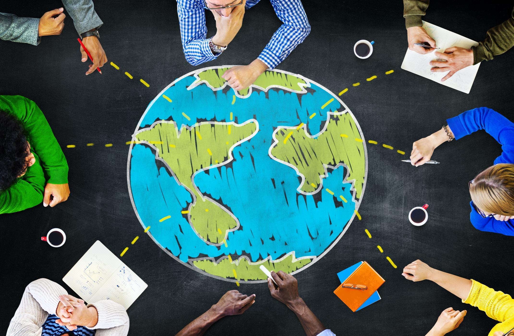
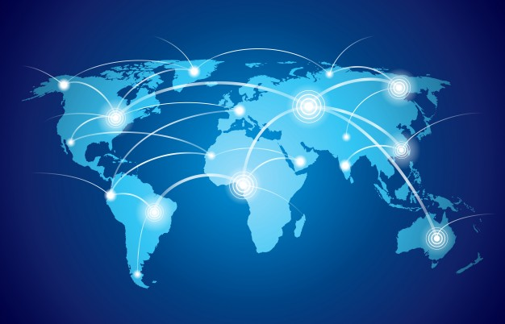
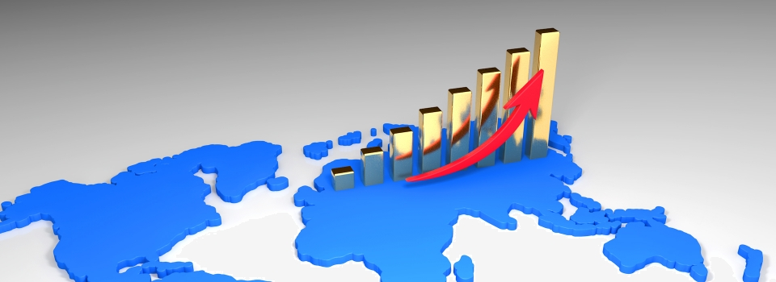

Global Education
- Develop self-Awareness
- Improve relationship-building skills
Global education helps develop self-awareness of own identity, culture, beliefs ... and helps to know how those connect with the wider world, social awareness including empathy, perspective-taking, appreciating diversity, and respecting others, and relationship-building skills with diverse individuals and groups through effective communication and collaboration.
Global Technology
- Equal quality of Life
- Eco-friendly technology
As the development of technology around the world, the gap between developed countries and developing countries is widening... And because of these reasons, the gap between rich and poor is declared that is one of the biggest problem. However, if globalisation is proceed and developed countries cooperate to poor countries for advancing technology. The gap will be declined and Equal quality of Life will be materialise. Furthermore, development of technology decrease waste of resources and helps maintaining environment.
Economic Growth
- Increase of GDP
Globalisation and increased economic interdependence have accompanied and facilitated economic growth in many countries and regions... helping world GDP grow from around 50 trillion USD In 2000 to 77 trillion USD in 2016. According to these statistics, almost people who have a job and earn income from their job are likely to respond positively about global cooperation. Globalisations has impacted people and communities across the globe and has significantly influenced sustainable development. Moreover, there are plenty of advantages of cooperation between various countries.